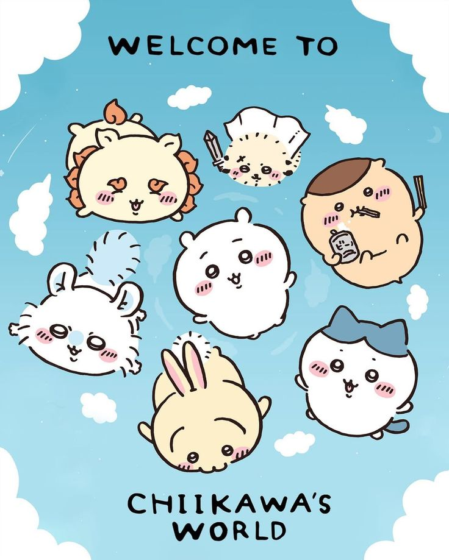

Chiikawa is a massive Japanese pop culture phenomenon created by illustrator Nagano that follows the daily lives of small, cute creatures navigating a surprisingly realistic and challenging world. While the characters—including the timid Chiikawa, the expressive Hachiware, and the chaotic Usagi—are visually adorable, the story uniquely contrasts this cuteness with adult struggles like working low-wage jobs, studying for certification exams, and fighting dangerous monsters. This blend of extreme cuteness, dark underlying lore, and relatable themes of friendship and hardship has made it an massive global hit across webcomics, anime, and merchandise.
